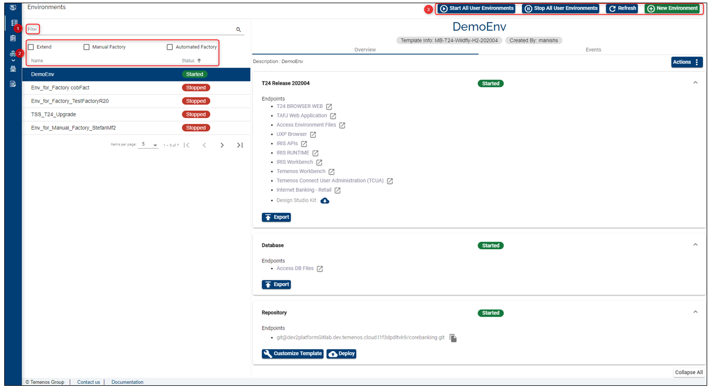
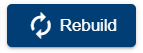

Environment Basic Operations
After logging to the portal, go to the Environments tab on the left menu > you will see available two buttons: Refresh and New Environment.
After creating an environment, there are several actions (operations) that can be done via the available buttons: clone, edit, delete, start, stop, rebuild, export the database, boost and deploy the repository and also using the endpoints related to T24, the database or to the repository.

Environment buttons:
 Refreshing the page:
Refreshing the page:
- Use this button to refresh any action in progress (related to an environment but also to a factory).
Creating a new environment:
- Displays the fields required to create an environment. here you can give a name and a description to your environment and choose a template.
Cloning an environment:
- Creates an identical environment by copying the Environment and configuration repository.
 Editing an environment:
Editing an environment:
- Allows you to change the name and the description of an environment.
 Deleting and environment:
Deleting and environment:
- Stops all instances of an Application in the Environment, removes all resources including configuration repository.
T24 Release section - available actions:
Endpoints:
GO TO APPLICATION - clicking this endpoint, a new tab containing the T24 BrowserWeb URL will open in a new browser window. The username and password to be used here will have been sent via email.
MONITOR APPLICATION - clicking this endpoint, the TAFJEE Servlets page will open in a new browser tab and from here you can check the following sections:
- Diagnostic section: provides details about your TAFJ environment, get routine compilation details, etc.
- Execution section: run services, etc.
- Troubleshooting section: access log files, commo files, etc.
- tcdSFTP.temenos.cloud - allows you to copy the SFTP link.
- Design Studio Kit - you can start downloading Design Studio tool (DS version is compatible to your environment).
Buttons:
Starting an environment:
After creating an environment, the Start button is automatically disabled as the environment is running. It will be enabled if an environment is stopped and it will start all the instances specified in the Environment configuration.
When the environment is stopped, start button is supposed to start the VMs where the database and the application server of a T24 environment are installed and also to start the application server (jboss, wildfly, WebSphere, etc.) so that T24 to be up and running.
- However, please note that start button is not triggering also the deployment of whatever is present into the associated Git repository (like something that was committed when the environment was stopped or a T24 update package ( L1 development) that was not yet successfully deployed to the T24 area).
Stopping an environment:
- Stops all running instances of an Application in an Environment.
 Rebuilding an environment:
- It recreates the resourses into the cloud and re-installs T24 and H2 db.
- This is used for example when modifying the application templates (like changing the T24 displayed name or addign a new application).
Exporting an environment:
- Allows to export and import an environment or a database through SFTP server.
Clicking the 'Export Environment' button will generate a zip file on the sftp.temenos.cloud portal containing:
- all jar files deployed in T24 sandbox and the correspondent module.xml file;
- the content of the default folder of T24;
- all war files deployed in the T24 sandbox and the jboss server log.
Database section - available actions
Buttons:
Exporting the database:
By clicking the "Export database" button a zip file will be generated in the sftp.cloud.temenos portal which will contain the current database of the sandbox. Note: This database can be used as a backup that can be deployed later on into the sandbox as a duplicate for testing/development or for local development before deploying to the cloud.
Endpoints:
- tcdSFTP.temenos.cloud - allows you to copy the SFTP link.
Repository section - available actions
Buttons:
 Boosting
Boosting
- Used to apply the changes made to the environments' repository (you can modify the infra-templates, the playbooks or the roles).
Deploying
- To be used when deploying newly added plugins, endpoints, updates, web services, packages etc.
Endpoints:
This section displays the gitlab repository correspondent to your T24 sandbox that you can copy it in order to clone the repository.
- example: git@tcdGitlab.temenos.cloud:1dyomzt4lxuyo/corebanking.git
Note
IMPORTANT!
As a good practice and in terms of reducing your costs, it is recommended that you don't keep an environment unused. Even if it's not used, it will still generate costs. The environment will be deleted by the Extend team (with a previous mail notification) when it is unused for more than 3 days (for internal clients), respectively for more than 7 days (for external clients).
Also to reduce costs, the environment can be put on Stop and started only when required. The environments that are stopped will not be deleted.